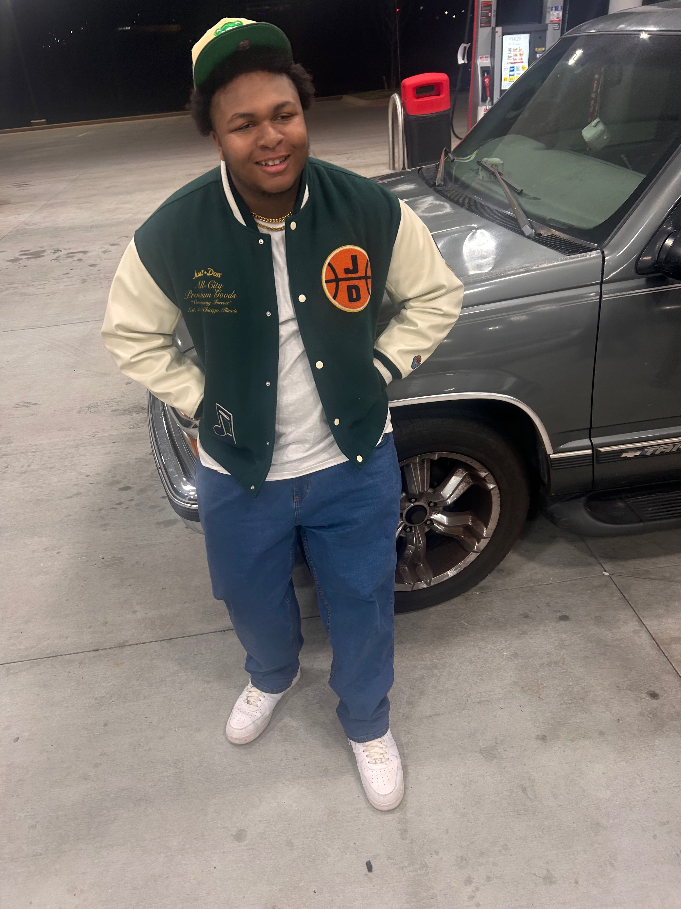

Join the crew
Fall/Winter approaching
Fall is my favorite season, and I’m so excited that it’s right around the corner. I love the crisp air, the colorful leaves, and the cozy feeling that comes with this time of year. There are so many fun activities to look forward to, like pumpkin picking, hayrides, and bonfires. I really enjoy spending time outside in the fall, whether it’s going on walks to see the changing trees or just relaxing with friends. I’d love for you to join me in some of these upcoming activities and make the season even more special. Together, we can create great memories and truly enjoy everything fall has to offer.
Also, winter is quickly approaching, and I’m looking forward to everything that comes with the season. The chilly weather makes it the perfect time for cozy nights indoors with hot chocolate and blankets. Outdoor activities like ice skating, sledding, and building snowmen make winter feel fun and exciting. For those who love adventure, skiing and snowboarding are also great ways to enjoy the snowy weather. Holiday traditions and gatherings with family and friends bring warmth to the cold season. Winter is also a great time i like to dress up the best and evrything so if your stylish then go ahead and hit me upp so we can flick up to twin.
Things I Did
- Traveled to atlanta to get my grills
- Saw a lot of cars over the summer
- Went thrifting for unique clothes
- Partied with friends and made great memories
Couple of photos from the last fall/winter
Below you will find some of my favorite photos from last fall:

These photos capture some of the best fits I wore during last fall and winter seasons. I love how each outfit reflects my personal style and the changing seasons. Each outfit not only keeps me comfortable but also allows me to express myself through fashion. I hope these photos inspire you to embrace your own style this fall and winter!
Check out my social media for more updates!